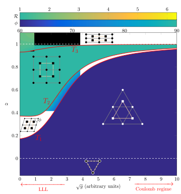

Vortex Lattices in Superfluid Mixtures
When a superfluid rotates it does so by nucleating quantised vortices, each of which contributes to the total angular momentum of the system. These vortices interact with each other with a strength proportional to the atomic scattering length, and if we consider a large collection of these objects, we know they will arrange in a triangular arrangement known as an Abrikosov lattice, regardless of the strength of interaction.
Things become more complicated when we consider more superfluids interacting with one other other, as it can occur in mixtures of different atomic species, or in systems with more internal degrees of freedom (e.g. atomic spins). In this case one usually finds different interaction strengths within the same species (say \(g_1,g_2,…\)) and yet another interaction strength between different species (say \(g_{ij}\)). Because of the competition of different strengths at play, the system of quantum vortices does not necessarily exhibit a triangular configuration any longer.
If we restrict our attention to system of two species, with equal density of vortices, we find five different configurations which can occur when varying the interaction strengths. For convenience we describe the inter-species interaction (between different species) as a function of the intra-species interactions by \(\alpha=g_{12}/\sqrt{g_1g_2}\). It is interesting to notice that for \(\alpha=1\), an exact symmetry exists, known as \(SU(2)\) symmetry. Here all the strengths at play exactly balance each other and consequently one can consider the system as if made by a single component: the aspect ratio of the two rectangular lattices is \(\mathcal{R}=\sqrt{3} \), and the combination of these such lattices gives a triangular lattice, as expected for a one-component superfluid.
Phase diagram for a superfluid mixture. Here \(g\equiv g_1=g_2\).
Finally it is possible to derive an expression for the phase boundaries determining the transition between one configuration and the other (denoted as \( T_j \) in the Figure). These can be found to be given by \( g_{12}^*=\sqrt{g_1g_2}+a\). The intercept \(a\) can be determined by the phase diagram in Figure, and it does not depend on the interaction strengths. Therefore the whole phase diagram of the system has been characterised and its configurations classified.
When the density of vortices in each species differ from one another \( \rho_v^{(1)}\ne \rho_v^{(2)} \) , things become even more interesting, and a zoo of new and more complex configurations can be found, such as, for instance, snub-square, honeycomb and kagome lattices. It is likely that all attainable configurations are related to the possible tilings of the plane through some symmetry principle. This would suggest there might be a way to predict the possible configurations for different vortex density ratios \( \rho_v^{(2)}/\rho_v^{(1)}\).